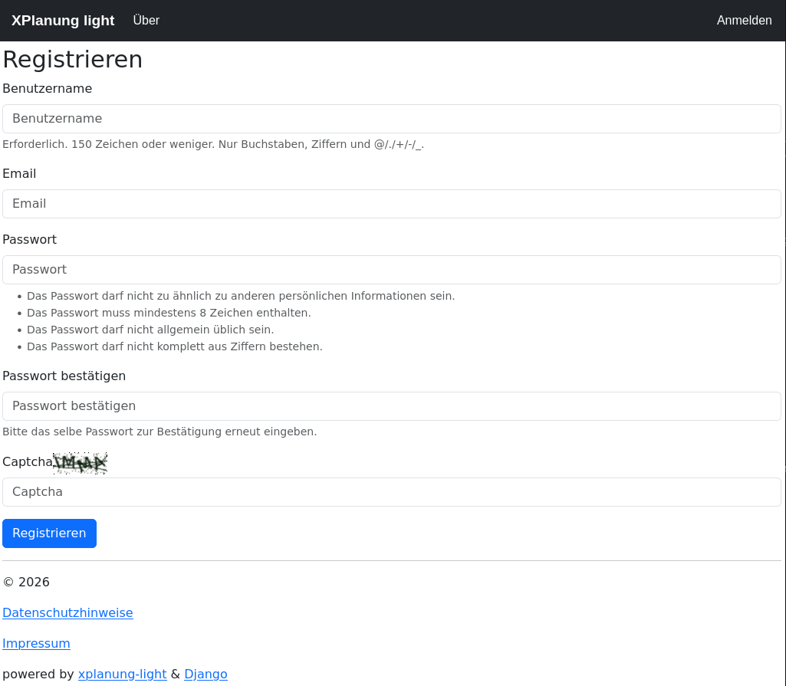
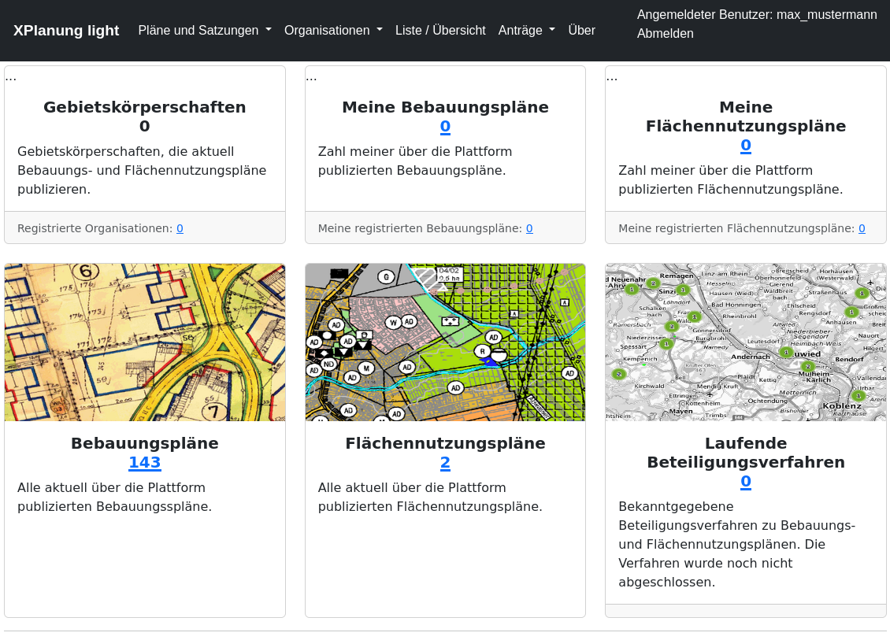
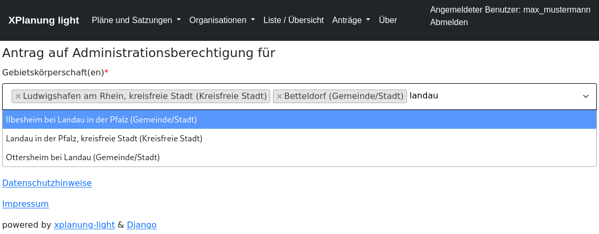
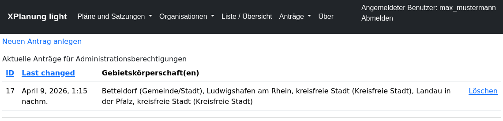

Nutzerverwaltung
Einleitung
Für die Verwaltung der Nutzer wird das Django Standardnutzermodell verwendet. Es werden nur minimale Informationen benötigt und die Nutzer können sich selbst registrieren.
Attribute für einen Nutzer:
Benutzername - frei wählbar im Rahmen der technischen Vorgaben (keine Leerzeichen erlaubt)
EMail
Password - frei wählbar im Rahmen der technischen Vorgaben (Minimallänge, nicht allgemein üblich , …)
Registrierung

Dashboard
Nach der erfolgreichen Registrierung ist der Nutzer direkt angemeldet. Er hat dann ein erweitertes Dashboard zur Verfügung und kann Anträge stellen.

Administrationsberechtigung
Um Bauleitpläne für Gebietskörperschaften verwalten zu können, muss diese Funktion durch den Zentraladministrator freigeschaltet werden. Hierzu stellt der Nutzer einen einfachen Online-Antrag. Im Formular kann aus der vorgegebenen Liste der Gebietskörperschaften ausgewählt werden.
Online-Antrag

Liste der Anträge

Freigabe
Die Anträge werden durch den Zentraladministrator geprüft und ggf. nach Rücksprache freigegeben. Bei Freigabe oder Zurückweisung erhält der Nutzer eine EMail. Die Anträge und Entscheidungen über die Anträge werden in der Datenbank dokumentiert.
Nach der Freigabe kann der Nutzer Bauleitpläne der ihm zugeordneten Gebietskörperschaften verwalten. Die Berechtigung hängt an der Gebietskörperschaft und nicht am Account des Nutzers.